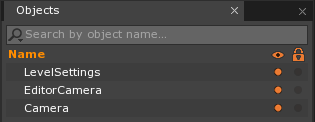
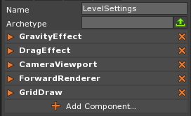

The Level Setting Object
The LevelSettings object is a Cog of which there is one unique instance per Level. It serves as a globally accessible object from a variety of object types such as Components or other Cogs. Unlike any other Cog there is no way to instantiate a LevelSettings object.
Common Uses
- Adding level specific physics effects.
- Centralized location for level specific components such as the
CameraViewport,ForwardRenderer, and other graphical effects.- Adding custom components which need to be globally accessible in a level by any other components that exist in the level.
Using the LevelSettings Object
Accessing the LevelSettings Object In Editor
The LevelSettings object will always be the first object in the Object Window making it easy to find in editor.

Since the LevelSettings object lacks any Graphics or Physics based representation in the level, the only way to select and modify its components in the editor is through the Object Window.
Note
LevelSettings & Hierarchies
While parenting can often be useful with objects that do not have transforms, in the case of the LevelSettings object, parenting has been deactivated.
Accessing the LevelSettings Object In Script
The LevelSettings object may be accessed from scripts via any component or Cog:
class ExampleComponent : ZilchComponent
{
// Accessing the LevelSettings object through the component
var CurrentLevelSettings : Cog
{
get { return this.LevelSettings; }
}
// Accessing the LevelSettings object through the component's object
var AlsoCurrentLevelSettings : Cog
{
get { return this.Owner.LevelSettings; }
}
// Accessing the LevelSettings object through the Space object
var StillTheCurrentLevelSettings : Cog
{
get { return this.Space.LevelSettings; }
}
function Initialize(init : CogInitializer)
{
// If we compare the values of the properties which access the LevelSettings
// object through different objects (component, component's object, and
// space), we can prove that theyare accessing the same LevelSettings object.
if(this.CurrentLevelSettings ==
this.AlsoCurrentLevelSettings ==
this.StillTheCurrentLevelSettings)
{
Console.WriteLine("These properties reference the same LevelSettings object.");
}
}
}
Default Components of LevelSettings

GravityEffect & DragEffect
Physics Effects are built in components that implement a piece of common physics-based functionality such as the GravityEffect or the DragEffect components that are attached to the LevelSettings by default. Each physics effect component may perform the logic on different spatial scopes depending on which object is attached to. When a physics effect component is attached to the LevelSettings object it is applied to all objects in that level. This allows one to implement level wide effects with any of the built in physics effects as is done by default with GravityEffect and DragEffect.
CameraViewport
When running a game one must create a window in which to render the game. This window is called a viewport. The CameraViewport component is what creates that viewport. Due to the fact that most games are not split screen one may think that normally only one viewport and therefore only one CameraViewport component would exist per game. However, it is common practice in Zero to build your UI in a separate level and load it into a second space which must be rendered with a transparent background on top of the game space.
In order to achieve this effect where the HUD renders on top of the game with our interacting with it the HUDSpace needs its own CameraViewport. Having the CameraViewport component attached to the LevelSettings provides any object in the space, or any object that has access to the space to have easy access to the component. The usefulness of this structure is even greater in split screen games where there is potential for many spaces and viewports to exist that will all need data about the others.
GridDraw
The GridDraw component is a simple debug drawing component. It uses Zero’s buit in debug drawing functionality to create a customizable unit grid in the Level Window.
ForwardRenderer
By default, the ForwardRenderer is attached to the LevelSettings object; it may be replaced, however, with the DeferredRenderer if that is the desired rendering pipeline.
Custom Components
The LevelSettings object is often a very convenient object on which to attach certain custom Zilch components. Imagine a scenario in which a function is implemented for a friendly AI which needs to return an enemy to attack. If all the enemies exist independent of any other object or component, there may be no immediate path from which to access all enemies from the AI.
A common technique is to add an EnemyManager component to the LevelSettings object which has a member of type Array[Cog] called EnemyList. By attaching this component to the LevelSettings object all objects, including the enemies, are given access to the EnemyManager component. If the enemies are implemented so that they add themselves to the EnemyList when they are initialized and remove themselves when they are destroyed, there now exists a reliable way of accessing a complete list of all existing enemies.
While the above example may not be applicable to all games, it demonstrates the usefulness and flexibility that the LevelSettings object may grant.
Events Dispatched On The LevelSettings Object
| Event Name | Type | Description |
|---|---|---|
| EnterView | GraphicalEvent |
Dispatched if CameraViewport is attached to the
LevelSettings object. |
| ExitView | GraphicalEvent |
Dispatched if CameraViewport is attached to the
LevelSettings object. |